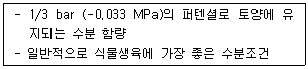
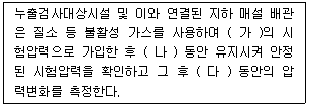
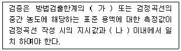
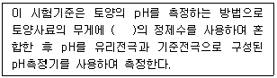
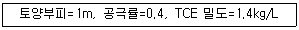
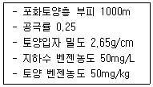
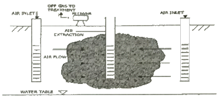
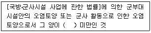
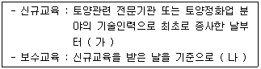

토양환경기사 (2014-09-20 기출문제)
1과목: 토양학개론
1. 미국 토양분류 기준인 Soil Taxonomy의 토양목 구분 중 'Entisol'에 관한 설명으로 옳은 것은?
- 토양층위가 뚜렷하지 않은 미발달 토양
- 유기물함량이 높아 표토가 검은 빛깔의 토양
- 화산재 토양
- 유기질로 이루어진 늪지의 토양
(정답률: 88%)

2. 토양 내 중금속에 관한 내용으로 틀린 것은?
- 크롬 : 6가 크롬이 3가 크롬에 비하여 이동성이 크고 독성이 강함
- 비소 : 3가 비소가 5가 비소에 비하여 이동성이 크고 독성이 강함
- 수은 : 3가 수은이 2가 수은에 비하여 이동성이 크고 독성이 강함
- 카드뮴 : 생물농축 되어 독성이 증가함
(정답률: 84%)
3. 토양층위 중 A층에 대한 설명으로 옳은 것은?
- 유기물의 원형을 식별할 수 있는 유기물 층이다.
- 광물질이 풍부하여 하부에 있는 층보다 색깔이 짙은 것이 특징 이다.
- 풍화 작용이 가장 활발하게 진행되고 있는 층이다.
- 토양의 구조가 뚜렷하게 구분되는 것이 특징이다.
(정답률: 88%)
4. 입자의 크기가 토양의 성질에 미치는 요인에 관한 내용으로 틀린 것은? (단, 구분 : 모래 - 미사 - 점토 순서)
- 유기물분해 : 빠름 - 중간 - 느림
- 오염물질 용탈능력 : 높음 - 중간 - 적음
- 팽창수축력 : 높음 - 중간 - 낮음
- 차수능력 : 불량 - 불량 - 좋음
(정답률: 75%)
5. 다음의 토양점토광물 중 2 : 1 형 층상 구조를 갖는 광물(3층형 광물)에 해당되지 않는 것은?
- Kaolinite
- illite
- montmorillonite
- vermiculite
(정답률: 87%)
6. 다음에서 오염물질의 이동특성 중 이류(advection)에 해당하는 것은?
- 용액의 농도가 불균일할 때 농도가 높은 곳으로부터 낮은 곳으로 물질이 이동하는 것
- 지하수환경으로 유입된 오염물질이 지하수의 공극유속과 같은 속도로 움직이는 것
- 용질이 다공질 매체를 통하여 이동하는 과정에서 희석 되는 것
- 용질의 유동이 예상보다 늦어지는 현상
(정답률: 83%)
7. 다음 중 이온교환효율이 큰 순서로 옳은 것은?
- Li ＞ Rb ＞ Na ＞ K
- K ＞ Rb ＞ Li ＞ Na
- Na ＞ Li ＞ K ＞ Rb
- Rb ＞ K ＞ Na ＞ Li
(정답률: 77%)
8. 토양공기 조성에 관한 설명으로 옳은 것은?
- 토양의 깊이에 따른 산소함량 감소정도와 토양공극의 특성과의 관계는 무관하다.
- 질소의 함량은 대기 중의 함량과 비슷하다.
- 대기에 비하여 상대습도는 낮고 탄산가스는 높은 편이다.
- 대기에 비하여 상대습도는 높고 탄산가스는 낮은 편이다.
(정답률: 84%)
9. 토양에서 일어나는 양이온교환 반응과 농업생산성과의 관련 내용으로 틀린 것은?
- 치환성 K Ca Mg 등은 식물영양소의 주된 공급원이다.
- 산성 토양의 pH를 높이기 위한 석회요구량은 양이온교환 용량이 클수록 많아진다.
- 흡착된 K+, Ca2+, Mg2+, Na+ 등의 이온들은 쉽게 용탈되지 않는다.
- 토양에 비료로 사용한 K+, NH4+ 등은 토양에서 이동성이 급격하게 증가된다.
(정답률: 55%)
10. 지하수오염 가능성도(DRASTIC)평가시 고려되는 인자와 가장 거리가 먼 것은?
- 저류계수
- 지하수위
- 토양의 구성물질
- 지형구배
(정답률: 30%)
11. 질산성질소(NO3- - N)의 농도가 30mg/L 인 경우 NO3-의 농도는?
- 133 mg/L
- 156 mg/L
- 164 mg/L
- 176 mg/L
(정답률: 85%)
12. 다음 내용이 설명하는 용어로 가장 옳은 것은?

- 위조점
- 유효수분
- 변곡저수량
- 포장용수량
(정답률: 67%)
13. 토양 사상균에 관한 설명으로 틀린 것은?
- 핵막과 세포벽을 가지고 있는 진핵 생물이다.
- 종속영양생물이다.
- 혐기성 생물로 이산화탄소의 농도가 높은 곳에서 활성이 크다.
- 대사활성이 강하여 물질순환에 있어서 분해자로 중요한 역할을 한다.
(정답률: 78%)
14. 다음 중 일반적으로 공극률이 가장 큰 토양은?
- 자갈
- 조립질 모래
- 미사
- 점토
(정답률: 75%)
15. 토양생성인자와 가장 거리가 먼 것은?
- 시간
- 구조
- 모재
- 지형
(정답률: 68%)
16. 다음의 점토광물 중 비표면적이 가장 적은 것은?
- Montmorillonite
- Kaolinite
- trioctahedral Vermiculite
- chlorite
(정답률: 87%)
17. 토양의 수분을 보유하는 힘인 토양수분장력이 물기둥의 높이로 15300cm 일 때 pF는?
- 4.02
- 4.18
- 4.36
- 4.57
(정답률: 82%)
18. 지하수 유동의 기본법칙인 Darcy의 법칙에 관한 설명으로 옳지 않은 것은?
- 지하수의 흐름 속도는 수두 구배에 비례한다는 경험법칙으로 흐름은 층류여야 한다.
- 투수성 기질로 채워진 원통을 통해 나오는 유량은 수두차에 반비례한다.
- 투수성 기질로 채워진 원통을 통해 나오는 유량은 거리에 반비례한다.
- 투수성 기질로 채워진 원통을 통해 나오는 유량은 흐름의 단면에 비례한다.
(정답률: 82%)
19. 어느 지역 토양시료에 대해 공극률 측정결과가 20% 였다. 시료 내 수분부피와 공기부피는 각각 16cm3, 4cm3였다면 현장에서 채취한 토양시료의 전체부피(cm3)는?
- 60
- 80
- 100
- 120
(정답률: 84%)
20. 지하수에 용존하는 용질의 이동기작에 관한 내용 중 기계적 분산(오염된 지하수는 다공질 기질을 통해 흐르면서 분산 이라는 기작을 통해 오염되지 않은 지하수와 섞여 희석됨) 의 설명으로 틀린 것은?
- 유체 흐름방향과 수직방향의 분산을 종분산이라 한다.
- 큰 공극을 지나는 유체가 작은 공극을 지나는 유체보다 빨리 흐르기 때문에 종분산이 일어난다.
- 유체가 공극을 통해 흐를 때 공극의 가장자리보다는 중심을 통해 더 빨리 흐르기 때문에 종분산이 일어난다.
- 기계적 분산계수는 평균선속도와 동력학적 분산도의 곱으로 주어진다.
(정답률: 56%)
2과목: 토양 및 지하수 오염조사기술
21. 수소이온농도(유리 전극법) 측정 시 간섭물질 및 간섭에 관한 설명으로 옳지 않은 것은?
- 토양을 오랫동안 방치하면 미생물의 작용으로 탄산가스가 발생하여 pH가 낮아질 수 있다.
- pH 11이상의 시료는 오차가 크게 발생할 수 있으므로 오차가 적은 특수전극을 사용한다.
- 유리전극은 일반적으로 용액의 탁도, 콜로이드성 물질들에 의해 간섭을 받는다.
- 유리전극을 넣을 떄 토양현탁을 만들어 주고 곧 넣어서 측정한다.
(정답률: 79%)
22. 실험을 위한 일반적 총직에 관한 내용으로 옳지 않은것은?
- 연속측정의 목적으로 사용하는 측정기는 공정시험 기준에 의한 측정치와의 정확한 보정을 행한 후 사용할 수 있다.
- 현장측정의 목적으로 사용하는 측정기기는 공정시험 기준에 의한 측정치와의 정확한 보정을 행한 후 사용할 수 있다.
- 하나 이상의 시험기준으로 시험한 결과가 서로 달라 제반 기준의 적부 판정에 영향을 줄 경우에는 실험별 정밀도로 판정한다.
- 정량한계는 지정된 시험기준에 따라 시험하였을 경우 그 시험기준에 대한 최소 정량한계를 의미한다.
(정답률: 67%)
23. 지정물질이 있는 누출검사 대상시설의 액상부 시험법에서 적용되는 판정기준 중 100만 리터 초과 160만리터 이하의 탱크용량에서 누출율은? (단, 고유누출 판정기준 이상이면 불합격)
- 0.8l/hr
- 1.2l/hr
- 1.6l/hr
- 2.0l/hr
(정답률: 54%)
24. 0.001N의Na0H 용액의 pH는?
- 9
- 10
- 11
- 12
(정답률: 75%)
25. 토양수분함량 시험에 대한 설명으로 틀린 것은?
- 증발접시는 미리 1⑤~110℃에서 1시간 건조시킨다.
- 사료를 1⑤~110℃의 건조기 앞에서 4시간 이상 건조하여 항량으로 한다.
- 증발접시는 사료두께를 10mm이하로 넓게 펼 수 있는 정도로 하부 면적이 넓은 것을 사용하여야 한다.
- 이 시험기준에 의해 토양 중 수분은 0.01%까지 측정한다.
(정답률: 88%)
26. 저장물질이 있는 누출검사대상시설에 대한 누출검사 방법인 기상부의 시험법에 관한 설명으로 옳지 않은것은?
- 미감압시험은 대기압보다 낮은 압력(-100mmH2O, -200mmH2O, -400mmH2O)을 사용하여 누출여부를 판정하는 방법이다.
- 누출검사 대상시설의 기상부 및 기상부에 접속되어 있는 저장시설과 분리하여 폐쇄할 수 없는 부속배관부의 누출여부를 판단하는 기말시험이다.
- 검사기기인 압력계(압력자기기록계)는 최소눈금 1mmH2O 를 읽을 수 있는 정밀도를 가진 압력계를 말한다.
- 검사기기인 가압장치는 가압 시 최대압력은 300mmH2O이하가 되도록 조정되는 것이어야 한다.
(정답률: 58%)
27. 저장물질이 없는 누출검사대상시설을 대상으로 가압시험법으로 누출검사를 하고자 한다. ( )안에 옳은 것은?

- 가 : 0.1kgf/cm2, 나 : 10분, 다 : 30분
- 가 : 0.1kgf/cm2, 나 : 15분, 다 : 1시간
- 가 : 0.2kgf/cm2, 나 : 15분, 다 : 30분
- 가 : 0.2kgf/cm2, 나 : 10분, 다 : 1시간
(정답률: 62%)
28. 토양오염관리대상시설지역 중 부지내 지상저장시설의 토양시료 채취지점선정 기준으로 옳은 것은? (단, 3개 지점 선정, 방유조를 설치하지 않는 경우)
- 저장시설의 끝단으로부터 수평방향으로 1m 이상 떨어진 지점에서 이격거리의 1.0배 깊이까지로 한다.
- 저장시설의 끝단으로부터 수평방향으로 1m 이상 떨어진 지점에서 이격거리의 1.5배 깊이까지로 한다.
- 저장시설의 끝단으로부터 수평방향으로 5m 이상 떨어진 지점에서 이격거리의 1.0배 깊이까지로 한다.
- 저장시설의 끝단으로부터 수평방향으로 5m 이상 떨어진 지점에서 이격거리의 1.5배 깊이까지로 한다.
(정답률: 89%)
29. 자외선/가시선 분광법을 이용하여 6가 크롬의 측정시 발색을 방해하는 시료 중 성분은?
- 잔류염소
- 잔류망간
- 잔류절소
- 잔류산소
(정답률: 81%)
30. 6가 크롬(자외선/가시선 분광법) 측정에 고나한 설명으로 옳은 것은?
- 청색의 착화합물의 흡광도를 460nm에서 측정
- 청색의 착화합물의 흡광도를 540nm에서 측정
- 적자색의 착화합물의 흡광도를 460nm에서 측정
- 적자색의 착화합물의 흡광도를 540nm에서 측정
(정답률: 85%)
31. 저장물질이 있는 누출검사대상 시설의 경우 액상부의 시험법에 의한 측정시 측정오류의 원인으로 옳은 것은?
- 측정 중 시설의 기울림 또는 들림에 의한 액면의 파동이 발생할 때
- 측정시간이 지나치게 짧을 떄
- 측정 중 과도한 온도 변화에 의한 유류의 면적변화가 있을 때
- 온도변화를 감지하는 기구가 적정한 위치에 있지 않을 때
(정답률: 58%)
32. 용기 중 취급 도는 저장하는 동안에 이물질이 들어가거나 또는 내용물이 손실되지 아니하도록 보호하는 용기는?
- 밀폐용기
- 기밀용기
- 밀봉용기
- 밀입용기
(정답률: 84%)
33. 정량한계와 표준편차의 관계로 옳은 것은?
- 정량한계 = 3 × 표준편차
- 정량한계 = 3.3 × 표준편차
- 정량한계 = 5 × 표준편차
- 정량한계 = 10 × 표준편차
(정답률: 88%)
34. 다음은 정도보증/정도관리에 관한 내용 중 검정곡선의 검증에 관한 내용이다. ( )안에 옳은 내용은?

- 가 : 5배 ~ 50배, 나 : 10%
- 가 : 5배 ~ 50배, 나 : 25%
- 가 : 2배 ~ 10배, 나 : 10%
- 가 : 2배 ~ 10배, 나 : 25&
(정답률: 70%)
35. 토양오염공정시험기준의 규정에 의한 용어의 설명으로 옳지 않은 것은?
- 가스체의 농도는 표준상태(0℃, 1기압, 상대습도 0%)로 환산 표시한다.
- "정확히 취하여"라 함은 규정된 양의 검체를 취하여 분석용 저울로 0.1mg까지 취하는 것을 말한다.
- "함량으로 될 때까지 건조한다"라 함은 같은 조건에서 1시간 더 건조할 때 전후 무게의 차가 g당 0.3mg이하 일 때를 말한다.
- 감압 또는 진공이라 함은 따로 규정이 없는 한 15mmHg이하를 말한다.
(정답률: 68%)
36. 원자흡수분광광도법을 사용한 아연 분석시 정확도 범위로 옳은 것은?
- 75% ~ 125%
- 70% ~ 130%
- 상대표준편차가 15% ~ 25%
- 상대표준편차가 25% ~ 30%
(정답률: 87%)
37. 다음은 수소이온농도(유리전극법) 측정에 관한 내용이다. ( )안에 옳은 내용은?

- 5배
- 10배
- 15배
- 20배
(정답률: 85%)
38. 누출검사대상시설과 관련된 용어에 대한 설명으로 틀린 것은?
- "부속배관"이라 함은 누출검사대상시설에 용접 또는 나사조암방식으로 직접 연결되는 배관을 말한다.
- "지하매설배관"이라 함은 부속배관의 경로중 지하에 매설되어 누출여부를 육안으로 직접 확인할 수 없는 배관물 말한다.
- "배관접속부"라 함은 누출검사대상시설과 부속배관,부속배관과 배관을 연결하기 위하여 용접접합 또는 나사조임방식 등으로 접속한 부분을 말한다.
- "누출검지관"이라 함은 기체의 누출여부를 누출검사 대상시설 외부에서 확인하기 위해 설치된 관을 말한다.
(정답률: 79%)
39. 토양사료 중 페놀류의 시험법에 대한 설명으로 틀린 것은? (단, 기체크로마토그래피 적용)
- 토양 중 페놀 및 펜타켈로로페놀의 추출은 아세톤/노말헥산(1 : 1)을 이용한다.
- 농축장비로 구데르나다니쉬 농축기 또는 회전증발 농축기를 사용한다.
- 간섭물질 중 디클로로에탄과 같이 머무름 시간이 긴 화합물은 용매의 봉우리 면적이 넓어 분석을 방해한다.
- 불꽃이온화검출기에 검출되는 페놀의 정량한계는 0.02mg/kg 이다.
(정답률: 70%)
40. 시료의 수분측정 결과 건조된 증발접시의 무게(W1)는 20.25g, 건조 전 증발접시와 시료의 무게(W2)는 41.50g 건조 후 증발접시와 시료의 무게(W3)는 35.50g 이었다면 시료의 수분 함량은?
- 42.2%
- 38.2%
- 32.2%
- 28.2%
(정답률: 74%)
3과목: 토양 및 지하수 오염정화 기술
41. 종속영양미생물(화학합성 종속영양)의 탄소원-에너지원으로 옳은 것은?
- 유기탄소 - 유기물의 산화환원반응
- 유기탄소 - 빛
- 이산화탄소 - 무기물의 산화환원반응
- 이산화탄소 - 빛
(정답률: 67%)
42. 기타토양복원기술과 비교한 토양세척(soil washing)공정의 장점과 가장 거리가 먼 것은?
- 외부환경의 조건변화에 대한 영향이 적고 자체적인 조건조절이 가능한 폐쇄형 공정이다.
- 적용 가능한 오염물 종류의 범위가 넓다.
- 오염토양내 수분공급으로 미생물에 의한 처리 효율을 높일 수 있다.
- 오염토양 부피의 단시간내의 효율적인 급강으로 2차 처리비용이 절감된다.
(정답률: 67%)
43. 다음 Bioventing에 대한 설명 중 틀린 것은?
- 불포화토양총내의 산소를 공급함으로써 미생물의 분해를 통해 유기물질을 분해하는 방법이다.
- 휘발성이 강한 유기물질 이외에 중간 정도의 휘발성을 가지는 분자량이 다소 큰 유기물질을 처리할 수 있다.
- 토양증기추출과의 운정상 큰 차이점은 공기 주입량과 추출량에 있다.
- 심하게 오염된 지역은 우선적으로 Bioventing를 적용하여 일정이하의 농도로 처리한 후 토양증기추출을 적용한다.
(정답률: 58%)
44. 수직차단벽인 키드인 슬러리 월(keyed-in slurry wall)의 수평적 도식형태 중 부분봉쇄(partial barrier, 상방향 (up-gradient))에 대한 설명으로 틀린 것은?
- 오염부지로부터의 직접적 침출액 발생의 조절에 효과적임
- 지하수 흐름 방향의 정확한 예측이 요구됨
- 오염물 주위로 지하수 효율의 부분적 우회(동수경사가 대체로 높은 지역)가능
- 전체봉합방법보다 저비용이 소요됨
(정답률: 59%)
45. 어느 지역의 토양 공극 내 TCE 포화도가 0.4로 알려져 있다면 처리대상 TCE의 무게(kg)는?

- 68
- 128
- 162
- 224
(정답률: 61%)
46. 다음 미생물 중에서 NO2를 NO3로 산화시키는 질산화 미생물로 가장 옳은 것은?
- Nitrosomonas
- Nitrobacter
- Rhodopseudomonas
- Thiobacillus
(정답률: 78%)
47. 어느 오염물질이 포화 토양층에 평형상태로 용해 및 흡착되어 있다. 다음의 조건에서의 지체 상수는?

- 약 6
- 약 9
- 약 12
- 약 15
(정답률: 37%)
48. 오염지하수를 반응벽체공법으로 처리하고자 한다. 반응벽체의 두께는 2.4m이며, 지하수의 선속도가 0.2m/hr 일 경우 반응벽체 통과시간은?
- 0.5 day
- 1 day
- 1.5 day
- 2 day
(정답률: 79%)
49. 어느 지역의 토양 내 TCE가 1.2 kg 존재하고, TCE의 물에대한 용해도는 약 1200mg/L로 알려져 있다면 TCE가 모두 용해되기 위해서 필요한 물의 양은?
- 0.1 m
- 1 m
- 10 m
- 100m
(정답률: 64%)
50. 식물정화법 중 오염물질이 뿌리 주변에 비활성의 상태로 측정되거나 식물체에 의하여 이동이 차단되는 원리를 이용한 것은?
- 근권여과
- 식물안정화
- 식물분해
- 식물추출
(정답률: 66%)
51. 유기 독성물질은 미생물 반응에 의해 분해된다. 이와 관련한 주요 생분해 반응으로 탈염소반응 , 가수분해반응, 분할, 탈수소할로겐화반응 등이 있다. 반응명과 반응식이 잘못 연결된 것은?
- 분할 : RCH3 → RCH2OH → RCHO
- 가수분해반응 : RX + H2O → ROH + H+ + X-
- 탈염소반응 : CCI4 → HCCI3 → H2CCI2
- 탈수소활로겐반응 : CCI3CH3 → CCI2CH2 + HCI
(정답률: 64%)
52. 오염토양의 처리방법인 토양세척의 주요 6개 공정에 해당되지 않는 것은?
- 흡착
- 분리
- 처리수 정화
- 미세토양 처리
(정답률: 68%)
53. 열탈착법의 장, 단점으로 틀린 것은?
- 수분 함량이 높은 오염토의 전처리가 필요 없는 장점이 있다.
- 매우 빠른 처리가 가능한 장점이 있다.
- 토양 굴착이 필요한 단점이 있다.
- 운영을 위한 필요 부지가 큰 단점이 있다.
(정답률: 75%)
54. Bioventing 기술 적용시 대상 오염부지의 정확한 산소 소모율 산정이 매우 중요하다. 주입공기 유량이 200m3/day, 초기 산소농도가 20.9%, 배가스의 산소농도가 5.9%, 토양체적이 5000m3, 그리고 토양의 공극률이 0.15일 때 평균 산소 소모율(%O2/day)은?
- 1
- 2
- 3
- 4
(정답률: 68%)
55. 생물학적 복원공정에서 유기 화학물질의 생분해능은 화합물의 분자구조에 의존한다. 다음 중 난분해성 경향을 가진 화합물과 가장 거리가 먼 것은?
- 원자의 전하차가 큰 화합물
- 분자 내에 많은 수의 할로겐원소를 함유한 화합물
- 가지구조가 적은 화합물
- 물에 대한 융해도가 낮은 화합물
(정답률: 83%)
56. 오염토양의 열처리 기술 중 열탈착기술에 대한 설명으로 틀린 것은?
- 열탈착 공정에서 발생하는 가스는 같은 용량의 소각공정에 비하여 가스량이 상대적으로 적게 발생된다.
- 열탈착 기술은 유기염소 및 유기인 살충제의 제거가 가능하다.
- 열탈착 기술로 처리하는 동안 생성되는 다이옥신류 및 퓨란의 처리가 용이하다.
- 열탈착 기술은 다양한 수분함량과 오염농도를 가진 여러 종류의 토양에 적용이 가능하다.
(정답률: 67%)
57. 지하수 내 벤젠의 농도가 50 mg/L 이다. 일차 감쇄 상수(first-order decay rate)가 0.0⑤/day 일 때 3년 후 지하수 내 벤젠의 농도(mg/L)는?
- 0.21
- 0.31
- 0.41
- 0.51
(정답률: 64%)
58. 다음 그림은 오염토양 정화기술의 한 종류를 나타낸 것이다. 이 공정으로 가장 적합한 것은?

- Permeable Reactive Barriers
- Air Sparging
- Natural Attenuation
- Bioventing
(정답률: 67%)
59. 다음의 미생물 반응 중에서 산화-환원반응으로 얻게 되는 에너지 크기가 가장 작은 것은?
- 혐기성 황산염 환원
- 혐기성 질산화
- 혐기성 질산염 환원
- 호기성 호흡
(정답률: 43%)
60. 어느 지역 토양 내 오염물질의 농도가 5 mg/kg 이었으며 이와 평형상태인 지하수 오염농도는 2 mg/L이었다. 이 지역 오염물질의 양(mg/m3)은? (단, 토양단위용적밀도는 1.6kg/L, 수분 부피비는 0.5 이며, 기타 조건은 고려하지 않음)
- 6,000
- 7,000
- 8,000
- 9,000
(정답률: 50%)
4과목: 토양 및 지하수 환경관계법규
61. 오염원인자가 오염토양개선사업 계획의 승인을 얻고자 할때에는 개선사업계획(변경)승인신청서를 사업개시일 며칠전까지 특별자치도지사ㆍ시장ㆍ군수ㆍ구청장에게 제출하여야 하는가?
- 7일
- 15일
- 20일
- 30일
(정답률: 62%)
62. 특정토양오염관리대상시설에 대한 사용중지명령을 이행하지 아니한 자에 대한 벌칙 기준으로 옳은 것은?
- 3년 이하의 징역 또는 3천만원 이하의 벌금
- 2년 이하의 징역 또는 2천만원 이하의 벌금
- 1년 이하의 징역 또는 1천만원 이하의 벌굼
- 1천만원이하의 벌금
(정답률: 40%)
63. 오염토양개선사업의 지도ㆍ감독기관으로 옳은 것은?
- 국립환경과학원
- 유역환경청
- 지방환경청
- 시ㆍ도 보건환경연구원
(정답률: 73%)
64. 오염토양은 대통령령으로 정하는 정화기준 및 정화방법에 따라 정화하여야 한다. 이를 위반하여 오염토양을 정화한자에 대한 벌칙 기준은?
- 500만원 이하의 벌금
- 1000만원 이하의 벌금
- 1년 이하의 징역 또는 1천만원 이하의 벌금
- 2년 이하의 징역 또는 2천만원 이하의 벌금
(정답률: 69%)
65. 토양보전기본계획 수립시 포함되어야 하는 사항과 가장 거리가 먼 것은?
- 토양정화업 현황 및 장래예측
- 토양정화를 위한 기술인력의 교육 및 양성에 관한 사항
- 토양보전에 관한 시책방향
- 토양오염의 방지에 관한 사항
(정답률: 50%)
66. 수질검사대상이 되는 공업용수용 지하수 양수 규모 기준은?
- 1일 양수능력이 30톤 이상인 경우
- 1일 양수능력이 50톤 이상인 경우
- 1일 양수능력이 60톤 이상인 경우
- 1일 양수능력이 100톤 이상인 경우
(정답률: 71%)
67. 토양오염우려기준으로 옳지 않은 것은? (단, 1지역인 경우이며, 단위는 mg/kg 임)
- 카드뮴 : 4
- 구리 : 150
- 아연 : 200
- 비소 : 25
(정답률: 59%)
68. 토양오염대책기준으로 옳지 않은 것은? (단, 1지역인 경우이며, 단위는 mg/kg 임)
- 카드뮴 : 12
- 수은 : 12
- 납 : 600
- 6가크롬 : 300
(정답률: 43%)
69. 위해성 평가 대상 오염물질과 가장 거리가 먼 것은? (단, 중금속류 기준)
- 구리
- 시안
- 니켈
- 아연
(정답률: 53%)
70. 환경부장관이 고시하는 측정망 설치계획에 포함되어야 하는 사항과 거리가 먼 것은?
- 측정망 설치시기
- 측정망 배치도
- 측정망 배경농도
- 측정지점의 위치 및 면적
(정답률: 72%)
71. 토양정화업자의 준수사항으로 틀린 것은?
- 기술인력은 해당분야에 종사하게 하여야 한다.
- 토양정화업자는 매년 12월 31일까지 토양정화실력을 시ㆍ도지사에게 보고하여야 한다.
- 정화현장에 오염토양의 정화공정도 및 정화일지를 작성하여 비치하고, 정화일지는 3년간 보관하여야 한다.
- 토양관련전문기관의 정화검증을 위한 정화현장 방문, 시료의 채취 등 검증업무수행을 방해하여서는 아니된다.
(정답률: 66%)
72. 특정토양오염관리대상시설에 대하여 변경신고를 하여야 하는 경우와 가장 거리가 먼 것은?
- 사업장의 명칭이 변경되는 경우
- 특정토양오염관리대상시설의 사용을 종료하거나 폐쇄하는 경우
- 특정토양오염관리대상시설에 저장하는 오염물질을 변경하는 경우
- 특정토양오염관리대상시설에 저장하는 오염물질 총량의 100분의 15이상이 증가하는 경우
(정답률: 61%)
73. 토양오염도 검사 수수료 중 시료채취비에 관한 설명으로 옳은 것은?
- 71,900원/공(관측공이 설치되어 있는 지점에서 시료를 채취하는 경우에는 관측공 당 시료채취비의 25%를 적용)
- 71,900원/공(관측공이 설치되어 있는 지점에서 시료를 채취하는 경우에는 관측공 당 시료채취비의 50%를 적용)
- 91,900원/공(관측공이 설치되어 있는 지점에서 시료를 채취하는 경우에는 관측공 당 시료채취비의 25%를 적용)
- 91,900원/공(관측공이 설치되어 있는 지점에서 시료를 채취하는 경우에는 관측공 당 시료채취비의 50%를 적용)
(정답률: 71%)
74. 다음은 오염원인자가 토양정화업자에게 위탁하지 아니하고 직접 정화할 수 있는 경우의 기준이다. ( )안의 내용으로 옳은 것은?

- 5 세제곱 미터
- 10 세제곱 미터
- 25 세제곱 미터
- 50 세제곱 미터
(정답률: 60%)
75. 지하수의 수질기준 항목(특정유해물질)이 아닌 것은? (단, 공업용수로 사용하는 경우)
- 불소
- 유기인
- 테트라클로로에틸렌
- 트리클로로에틸렌
(정답률: 65%)
76. 다음 중 정밀한 토양오염검사를 위해 환경부령이 정한 토양관련전문기관이 아닌 것은?
- 유역환경청
- 시ㆍ도 보건환경연구원
- 지방환경청
- 국립환경과학원
(정답률: 57%)
77. 다음은 기술인력의 토양환경관리 교육과정 이수에 관한 내용이다. ( )안에 옳은 내용은?

- 가 : 1년 이내에 12시간, 나 : 3년 마다 8시간
- 가 : 1년 이내에 24시간, 나 : 3년 마다 8시간
- 가 : 1년 이내에 12시간, 나 : 5년 마다 8시간
- 가 : 1년 이내에 24시간, 나 : 5년 마다 8시간
(정답률: 69%)
78. 토양정화업의 등록요건 중 장비에 관한 기준으로 옳지 않은 것은?
- 현장용 수질측정기 1식(수소이온농도, 수온, 전기전도도, 용존산소, 산화환원전위의 측정이 가능할 것)
- 휴대용 가스측정장비 1식(휘발성유기화합물질, 산소, 이산화탄소 및 메탄의 측정이 가능할 것)
- 시료 채취기 1대(깊이 6미터 이상 시료채취가 가능할 것)
- 지하수위 측정기(수심 10미터 이상 측정이 가능할 것)
(정답률: 72%)
79. 시료의 채취 및 분석을 통한 토양오염의 정도와 범위를 조사하는 토양환경평가 조사 단계(순서)는?
- 개황 조사
- 기초 조사
- 정밀 조사
- 오염도 조사
(정답률: 71%)
80. 환경부장관이 토양관리단지 조성계획을 수립할 때 포함되어야 하는 사항과 가장 거리가 먼 것은?
- 교통시설 등 주요 기반 시설설치 및 운영계획
- 환경보전계획
- 조성 대상 부지의 확보 방안
- 오염토양 정화 처리 계획 및 방안
(정답률: 54%)